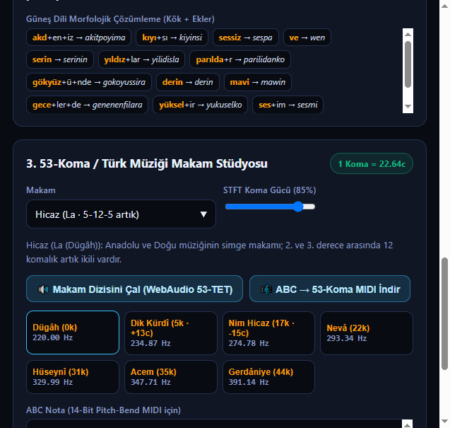

Arayüzü hangi sırayla, ne amaçla ve nasıl kullanacağınızı anlatan adım adım rehber
WerrOzan Stüdyo'yu 5 Adımda Kullanın
WerrOzan iki katmandan oluşur: Tarayıcı Katmanı (üyelik gerektirmeden çalışan demo oynatıcı, Güneş Dili morfoloji, WERR Z/9Z ve 53-Koma WebAudio klavyesi) ve Xeon Motor Katmanı (onaylı üyelik anahtarıyla çalışan gemini-flash çoklu yedekli taslak/uyarlama motoru, YuE2 AI şarkı sentezi ve 53-Koma STFT ses/MIDI işleme).
İlk Demo Şarkıyı Dinle & İndir: Sağ üstteki İlk Demo Şarkı kartından Mavi gecelerde yükselir sesim (30 sn, 48 kHz Lossless FLAC, 4.6 MB) parçasını doğrudan dinleyebilir veya indirebilirsiniz.
Güneş Dili & WERR Z/9Z Monitörü: Söz kutusuna Türkçe satırlar yazdıkça motor.js (0 B VRAM) anlık olarak sözcükleri kök+eklerine ayırır, hece sayısını ve büyük ünlü uyumu oranını hesaplar.
53-Koma Mikrotonal Klavye: Sağ alttaki Makam listesinden örneğin Hicaz veya Rast seçip Makam Dizisini Çal'a veya tek tek derecelere basarak 53-TET koma aralıklarını tarayıcıda duyabilirsiniz.
Şekil 1: Üst şeritte üyelik başvurusu ve üyeliksiz demo oynatıcı; altta ise şarkı atölyesi ile Güneş Dili / WERR Z/9Z monitörü yer alır.
1
E-posta ile Üyelik Başvurusu ve Onay Akışı
Başvuru Gönderin:E-posta ile Üye Ol sekmesinde e-posta adresinizi, adınızı/sanatçı adınızı ve kullanım amacınızı yazıp Üyelik Başvurusu Gönder butonuna basın.
Çift Yönlü E-posta Bildirimi: Başvuru yaptığınız anda size "WerrOzan Üyelik Başvurunuz Alındı" e-postası, sistem yöneticisine ise tek tıkla inceleme bağlantısı gider. Yönetici onaylamadığı sürece hiçbir API anahtarı oluşturulmaz.
Tek Tıkla Bağlantı: Yönetici onayladığında size özel woz_... API anahtarınız e-postanıza gelir. Maildeki "Stüdyoyu Aç & Otomatik Bağlan" linkine tıkladığınızda anahtar tarayıcınıza otomatik yüklenir ve üst çubuktaki durum rozeti Bağlı · YuE2 Aktif olur.
2
"Cevap Werr" ile Söz ve Stil Taslağı Üretme
Şarkı Fikri / İstem (4000 Karakter): Geniş çok satırlı istem kutusuna aklınızdaki temayı, enstrümanları, BPM'i, duyguyu veya hikâyeyi Türkçe (ya da seçilen dilde) rahatça yazıp yapıştırabilirsiniz.
Hedef Süre & CoT: İlk denemeler için 30 sn–90 sn süre ve Full (Nota + Armoni) modu idealdir.
💬 Cevap Werr (Gemini Taslak): Butona bastığınızda sunucudaki gemini-flash yedekli model zinciri parça adını, İngilizce YuE2 stil etiketlerini ve [Verse 1], [Chorus] formatlı şarkı sözlerini otomatik doldurur; dönen taslağı arka planda Güneş Dili kurallarına göre süzgeçten geçirir.
3
"Karar Werr" ile Güneş Dili & WERR Z/9Z Monitörü Rehberi
AI şarkı üretimine geçmeden önce sözlerin diksiyon, ritim ve form kalitesini ⚡ Karar Werr ile kontrol edin. Sağ üstteki 2. Güneş Dili & WERR Z/9Z Monitörü kartındaki tüm göstergeler:
Üst 4 Gösterge Kutusu:
Hece: Sözlerdeki toplam hece sayısını gösterir.
Ünlü Uyumu (%): Türkçe büyük/küçük ünlü uyumu oranıdır; %75+ değerler AI vokalin telaffuzunu belirgin şekilde akıcılaştırır.
WERR VRAM (0 B): Bu denetimin tamamen deterministik olduğunu ve sunucunun GPU/VRAM belleğini harcamadığını gösterir.
CPU Bütçesi: Seçilen hedef süreye göre YuE2'nin ayırdığı token bütçesini (ör. 90s / 8192) gösterir.
Seed cx / cy / Zoom: WERR fraktal faz tohumu koordinatlarıdır; bölüm enerjilerinin yörüngesini deterministik olarak belirler.
Yeşil Balon (✓ Hece dengesi ve ünlü uyumu ideal; AI vokal ritmi uyumlu.): Sözler YuE2 ses sentezine tam hazırdır.
Sarı Uyarı Balonu (⚠ ...): Şu 4 sorundan birini yakaladığında uyarır:
(1) Parantez içi notlar ((Death growls) vb. — YuE2 bunları söylenecek söz sanıp İngilizce okumaya çalışır; yeri YuE2 Stil Etiketleri kutusudur),
(2) Standart dışı [...] etiketleri (yalnızca [Intro], [Verse 1], [Pre-Chorus], [Chorus], [Bridge], [Outro] vb. standart etiketler kullanılmalıdır),
(3) Hece dengesizliği (aynı kıtadaki dizeler arası fark 4+ heceye çıkarsa vokal ritimden düşebilir),
(4) Kesilme Riski & Tireli Bölünme (seçili hedef süre için toplam hece/satır sayısı YuE2 vokal bütçesini aşıyorsa — örn. 90 sn için en fazla ~8–10 satır / ~90 hece — veya [Intro]/[Outro] altında söylenecek satır ya da ka-ran-lık gibi tireli hece bölünmesi varsa uyarır).
✨ Uyarla (Hataları Otomatik Düzelt): Sarı uyarı çıktığında hemen altında açılır; tek tıkla parantezleri, tireli hece bölünmelerini ve standart dışı etiketleri temizler, uzun sözleri seçili hedef süreye göre kırpıp dengeler ve balonu yeşile çevirir.
🛡️ Kesilme Koruması (+30 sn Doğal Bitiş EOS Tamponu): 1. kartta varsayılan olarak açıktır; söz bütçesi seçtiğiniz süreye (örn. 90 sn) göre kalırken motora +30 sn esnek tavan verilerek şarkının kelimenin ortasında kesilmeden kendi doğal akoruyla (EOS) kapanması sağlanır.
Güneş Dili Morfolojik Çözümleme (Kök + Ekler): Her kelimenin kök ve eklerine nasıl ayrıldığını gösterir; AI vokal diksiyonundaki hece bölünmesini önceden görmenizi sağlar.

Şekil 2: Güneş Dili kök+ek ayrıştırma kartları ve 53-Koma Hicaz mikrotonal klavye dereceleri.
4
"Şarkı Üret (YuE2 Xeon)" ile AI Ses Sentezi
Üretim Öncesi Dil Uyumu Koruması: Sarı uyarı balonu henüz düzeltilmeden Şarkı Üret'e basarsanız sistem sizi uyarır ("Yine de üretmek istiyor musunuz?"). İptal'e basarsanız üretim durdurulup odak doğrudan ✨ Uyarla düğmesine yönlendirilir; Tamam derseniz mevcut sözlerle üretime devam edilir.
Akustik Adım (NAR Steps) Seçimi:
10 · Hızlı Taslak: En hızlı Xeon CPU denemesi (~8–9 dk).
32 · Tam Stüdyo Kalitesi: Nihai master render (~25 dk).
Canlı Takip & İndirme: Log ekranı aşamaları (AR Semantik → NAR Akustik → VAE) canlı gösterir. Tamamlandığında ses oynatıcı açılır ve parçayı kayıpsız FLAC olarak indirebilirsiniz.
5
53-Koma Makama Çekme (Ses + 14-Bit MIDI)
Üretilen Şarkıyı Makama Çekme: Render bittikten sonra sağ panelde istediğiniz makamı (örn. Hicaz) ve STFT Koma Gücünü (önerilen %85) seçip 🎛️ Bu Parçayı Seçili Makama (53-Koma) Çek butonuna basın.
Müzikal Altın Kural (Makama Çekmek ≠ Makamda Bestelemek):Makama Çek işlemi şarkının bestesini, sözünü veya melodisini sıfırdan değiştirmez (örneğin Batı minör/Bûselik bir ezgideki Do notasını Do#'e zıplatmaz); yalnızca ses dalgasındaki harmonik tepeleri ±45 cent (yarım sesten ince mikrotonal koma) penceresinde seçili makamın 53-TET perdelerine akortlar. Otantik bir Hicaz veya Hüseynî seyri için: (1) İstemde makam/enstrüman karakterini (örn. Turkish Hicaz oud and ney melody, Phrygian dominant) belirterek üretin, (2) Ardından Makama Çek ile Batı 12-TET'in yuvarladığı komaları (örn. +13.2c Dik Kürdî, -15.1c Nim Hicaz) gerçek Türk müziği perdelerine oturtun.
Kendi Ses Dosyanızı İşleme: Bilgisayarınızdan WAV/FLAC/MP3 yükleyip Dosyaya Koma Uygula ile aynı STFT faz-kilitli mikrotonal kuantizasyonu uygulayabilirsiniz.
ABC → 53-Koma MIDI: DAW'larda (FL Studio, Ableton, Logic, Cubase) mikrotonal çalım için 🎼 ABC → 53-Koma MIDI İndir butonunu kullanın; her notadan hemen önce ±2 yarım ses RPN duyarlılığı ve 14-bit Pitch Bend olayı yazılır.
6
Adil Kuyruk Kuralları, E-posta Bildirimleri ve Medya Kitaplığı
Tek Seferde 1 Üretim (Zaman Damgalı FIFO): YuE2 Xeon sunucusu aynı anda 1 şarkıyı işler; farklı üyelerin emirleri gönderim zaman damgasına (submitted_at) göre sırayla işlenir. Sayfanın en altındaki Canlı Üretim Kuyruğu tablosundan sıranızı ve tahmini süreyi görebilirsiniz.
Kullanıcı Başına 1 Aktif İş: Kuyrukta bekleyen veya üretimde olan bir parçanız varken, mevcut işiniz tamamlanmadan ya da kuyruktan çıkarılmadan yeni üretim emri gönderemezsiniz.
4 Aşamalı E-posta Akışı:
1. Kuyruğa Alındı: Tüm parça özellikleriniz, kuyruk sıranız, tahmini üretim süreniz (~dk) ve henüz üretime başlamadan kuyruktan çıkarma bağlantısı gönderilir.
2. Üretim Başladı: Motor parçanızı fiilen işlemeye başladığında tahmini süre ve TSİ bitiş saati bildirilir. Üretimi başlamış parça artık kuyruktan silinemez.
3. Tamamlandı / Hata: Sayfayı kapatsanız veya yenileseniz bile üretim sunucuda devam eder; bittiğinde doğrudan dinleme/FLAC indirme linki (hata oluşursa yeniden deneme uyarısı) e-postanıza gelir.
4. 53-Koma Hazır: Bir parçayı makama çektiğinizde koma sürümünün linki ayrı e-posta ile iletilir.
Medya Kitaplığı Kotası (10 Ana Şarkı + 30 Dk Geçici 53-Koma): Hesabınıza özel en fazla 10 ana şarkı kalıcı olarak saklanır; 11. parça üretildiğinde en eski tarihli ana şarkı otomatik silinir. 53-Koma dönüşümü hızlı olduğu için koma sürümleri 30 dakika geçici saklanır ve süre dolunca otomatik temizlenir; istediğiniz zaman ana parçadan yeniden komaya çekebilirsiniz.
Otomatik Kapak Görseli & Lightbox İndirme: Medya kitaplığındaki her şarkının başında (demo kartında olduğu gibi) otomatik üretilen kapak görseli yer alır. Kapağa tıkladığınızda görsel orijinal boyutunda Lightbox içinde açılır ve tek tıkla indirilebilir.
📥 Atölyeye Yükle (Taslağı Yüksek Kalitede Yeniden Üretme): Medya kitaplığındaki herhangi bir parçanın altındaki 📥 Atölyeye Yükle düğmesine tıkladığınızda; parçanın oluşturulduğu Şarkı Fikri, Dil, Süre, CoT Modu, NAR Steps, Başlık, Stil Etiketleri ve Sözler birebir 1. Şarkı & Söz Atölyesi kartına yerleştirilir ve otomatik olarak yalnızca Karar Werr analizi çalıştırılır (sözler değişmesin diye Cevap Werr tetiklenmez). Örneğin 10 veya 16 NAR adımda hızlı taslak olarak ürettiğiniz ve beğendiğiniz bir şarkıyı tek tıkla atölyeye yükleyip, sadece NAR adımını 32 yaparak en yüksek ses kalitesinde yeniden ürettirebilirsiniz.
Kişisel Kuyruk (4. Kart) vs. Genel Kuyruk (5. Kart) & TSİ Bitiş Saati: 4. kartta yalnızca kendi hesabınıza ait sıradaki/üretimdeki iş görünür ve henüz üretime başlamamışsa ✕ Kuyruktan Çıkar butonuyla yalnızca kendi işinizi iptal edebilirsiniz. Tüm üyelerin aktif sırası ise sayfanın en altındaki 5. Canlı Üretim Kuyruğu tablosunda izlenir; üretimdeki parçanın yanında e-postadakiyle birebir aynı Tahmini Bitiş: HH:MM TSİ rozeti gösterilir.
★
Örnek Kullanım Senaryosu: "Akdeniz Akşamında Hicaz Türkü"
Giriş: E-postanızla kaydolun ve onay mailindeki linkle woz_... anahtarınızı bağlayın.
İstem: Şarkı fikrine "Akdeniz kıyısında yıldızları izleyen sıcak, özlem dolu bir Anadolu folk ezgisi" yazın; Süre: 30 sn, Dil: Türkçe (tr), NAR Steps: 16 seçin.
Cevap Werr + Karar Werr: Taslağı ürettirin, ardından Karar Werr ile ünlü uyumunun %85+ olduğunu ve nakaratın Z9=0 doruğuna oturduğunu doğrulayın.
53-Koma Final: Makam menüsünden Hicaz (La · 5-12-5 artık), STFT Gücü %85 seçip Bu Parçayı Seçili Makama Çek'e tıklayın. AI'ın Batı 12-TET olarak ürettiği Si/Do# perdelerinin Hicaz'ın otantik +13.2c ve -15.1c koma renklerine kaydığını duyup yeni FLAC'ı indirin.